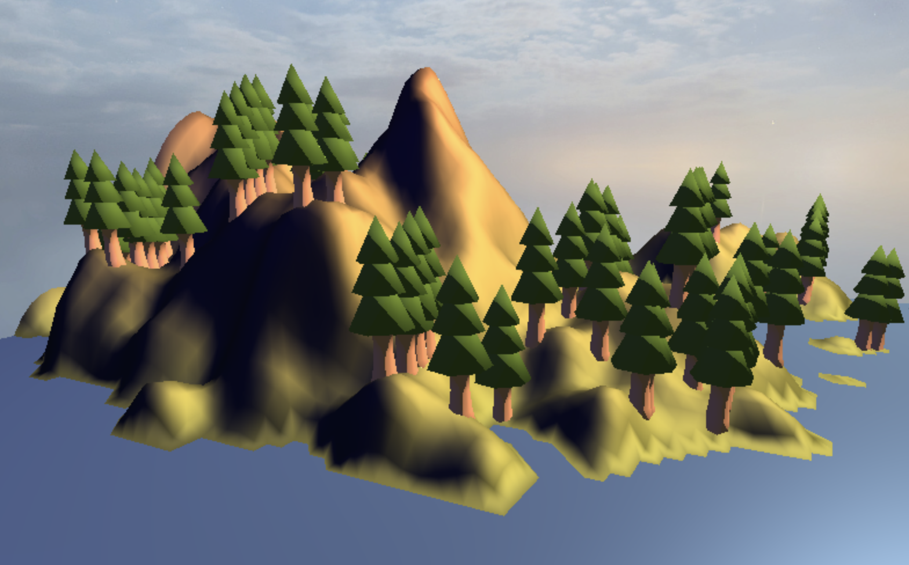
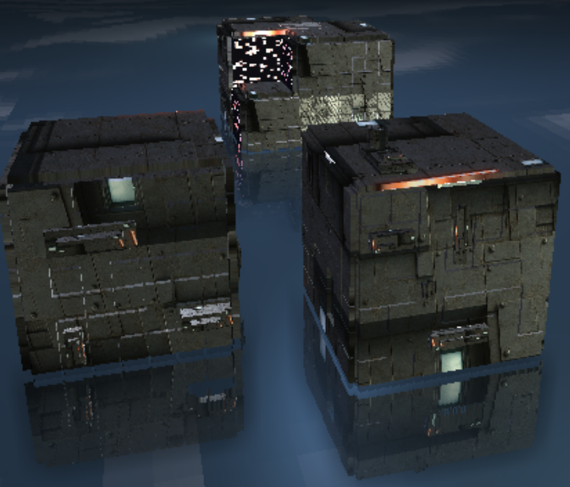

Cyberpunk City: A Dynamically Evolving Urban Landscape
Abstract
This project presents an immersive, ever-evolving cyberpunk city. Key features include stylized 3D buildings via Wave Function Collapse (WFC), realistic water reflections using Screen-Space Reflections (SSR), and animated billboards with dynamic textures and bloom effects. These components combine to create a vibrant, self-evolving urban landscape that draws users into a futuristic cyberpunk world.
Overview

TODO
Feature validation
| Feature | Adapted Points | Status |
|---|---|---|
| Runtime-evolving bloom effects on billboards | 5 | Completed |
| Dynamic billboard texture generation with noise | 10 | Completed |
| Wave Function Collapse (WFC) | 15 | Completed |
| Screen-Space Reflections (SSR) | 20 | Completed |
Runtime-evolving bloom effects on billboards
Implementation
TODO
Validation
TODO
Dynamic billboard texture generation with noise
Implementation
TODO
Validation
TODO
Wave Function Collapse (WFC)
Implementation
TODO
Validation
TODO
Screen-Space Reflections (SSR)
Implementation
For a more in-depth explanation, please refer to the SSR Guide by David Lettier, which served as the primary inspiration for this feature’s implementation.
Our approach follows these main steps:
- Render the base image without any reflections or shadows into a texture.
- Generate a reflection map to determine which points
in the base texture should be sampled for reflections. This involves:
- Calculating the position, normal, and reflection vector for each point on a reflective surface.
- Using the position and reflection vector to determine the start and end points for ray marching.
- Converting these coordinates into screen space for performance efficiency, as ray marching in screen space reduces redundant sampling.
- Performing ray marching, with a sampling rate defined by a resolution factor.
- Recording hits by checking whether any scene geometry is sufficiently close to the sampled points along the reflection ray.
- Refining the hit point to accurately determine where to sample the reflection color.
- Applying fade factors based on edge proximity, distance from the reflection plane, and other conditions to create a more natural reflection effect.
- Sample reflection colors from the base texture using the UV indices generated from the ray-marched hits. We also fill in gaps between sample points to reduce visual noise in the reflection.
- Apply a blur to the sampled reflection colors and store the result in a separate texture.
- Combine everything to produce the final reflection output by blending the base image with both the original and blurred reflection textures, using weighting factors for a smooth and realistic result.
Validation



Discussion
Additional Components
TODO
Failed Experiments
TODO
Challenges
At the start, navigating the codebase was quite challenging, even with the existing guide. To improve clarity and consistency for the entire team, we carried out a major refactor of the codebase — introducing standardized naming conventions and a unified structure for handling vertex and fragment shaders.
In particular, we streamlined the use of vertex shaders by
consolidating repeated versions into a single, reusable shader
(pass_through.vert.glsl), reducing redundancy across
different shader renderers.
Furthermore, to streamline the debugging process, we rendered many of the computer-generated images to textures, allowing us to directly choose which texture to render to. This made it much easier to inspect specific texture layers and directly debug individual shader renderers.
Contributions
| Name | Week 1 | Week 2 | Week 3 | Week 4 | Week 5 | Week 6 | Week 7 | Total |
|---|---|---|---|---|---|---|---|---|
| Eunice Lee (402359) | 2 | 5 | 4 | 4 | 6 | 6 | 8 | 35 |
| Howell Chan (402360) | 2 | 5 | 6 | 6 | 6 | 6 | 6 | 37 |
| Yifan Wu (402391) | 0 | 20 | 4 | 4 | 4 | 2 | 2 | 36 |
| Name | Contribution |
|---|---|
| Eunice Lee (402359) | 1/3 |
| Howell Chan (402360) | 1/3 |
| Yifan Wu (402391) | 1/3 |
Comments
For this project:
- Eunice focused on generating dynamic textures using noise and contributed to integrating the final scene.
- Howell implemented dynamic building generation using Wave Function Collapse and also worked on integrating the final scene.
- Yifan refactored the initial codebase to ensure a consistent and unified implementation, and developed the Screen-Space Reflection Feature.